1数据库系统与关系模型
1.1 本讲目录
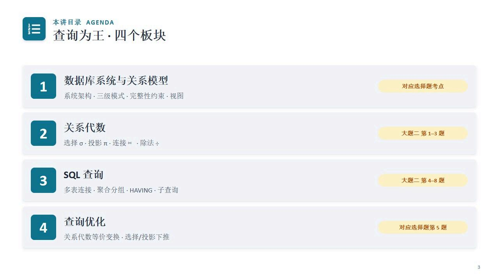
1.2 DBMS五大组件与查询处理器
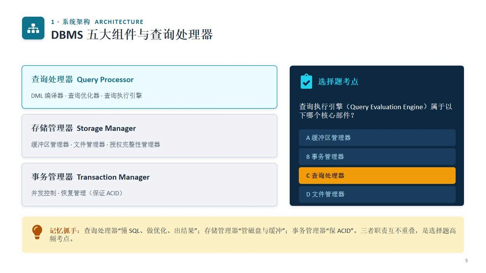
- 查询处理器：DML编译器、查询优化器、查询执行引擎
- 存储管理器：缓冲区管理器、文件管理器、授权完整性管理器
- 事务管理器：并发控制、恢复管理（保证ACID）
记忆抓手：查询处理器"懂SQL、做优化、出结果"；存储管理器"管磁盘与缓冲"；事务管理器"保ACID"。
1.3 三级模式两级映像与数据独立性
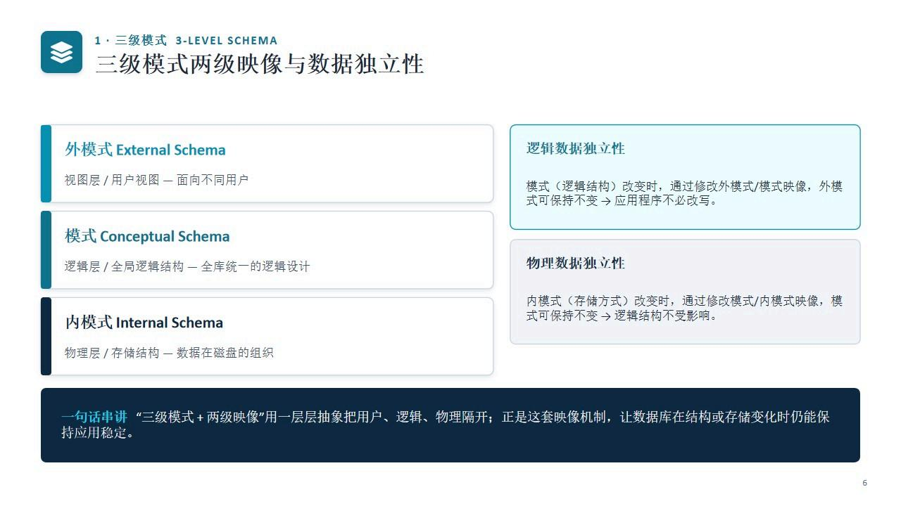
- 外模式（External Schema）：视图层/用户视图，面向不同用户
- 模式（Conceptual Schema）：逻辑层/全局逻辑结构，全库统一的逻辑设计
- 内模式（Internal Schema）：物理层/存储结构，数据在磁盘的组织
逻辑数据独立性：模式改变时，通过修改外模式/模式映像，外模式可保持不变→应用程序不必改写。
物理数据独立性：内模式改变时，通过修改模式/内模式映像，模式可保持不变→逻辑结构不受影响。
1.4 关系、元组与四种"键"
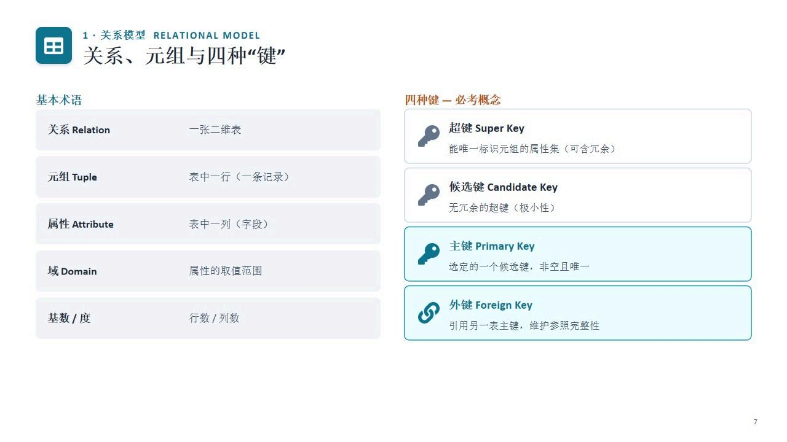
- 超键（Super Key）：能唯一标识元组的属性集（可含冗余）
- 候选键（Candidate Key）：无冗余的超键（极小性）
- 主键（Primary Key）：选定的一个候选键，非空且唯一
- 外键（Foreign Key）：引用另一表主键，维护参照完整性
1.5 三类完整性约束
- 实体完整性：主键属性不能为空（NOT NULL）、且唯一
- 参照完整性：外键的值，要么为空，要么等于被引用表中存在的主键值
- 用户定义完整性：针对具体应用的语义约束（CHECK、UNIQUE、默认值等）
1.6 外键能否为NULL？参与约束决定一切
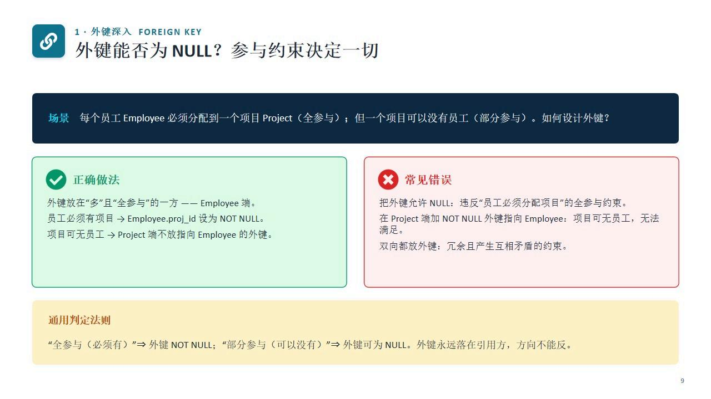
题目判定法则："全参与（必须有）"→外键NOT NULL；"部分参与（可以没有）"→外键可为NULL。外键永远落在引用方，方向不能反。
1.7 视图：一张"虚表"
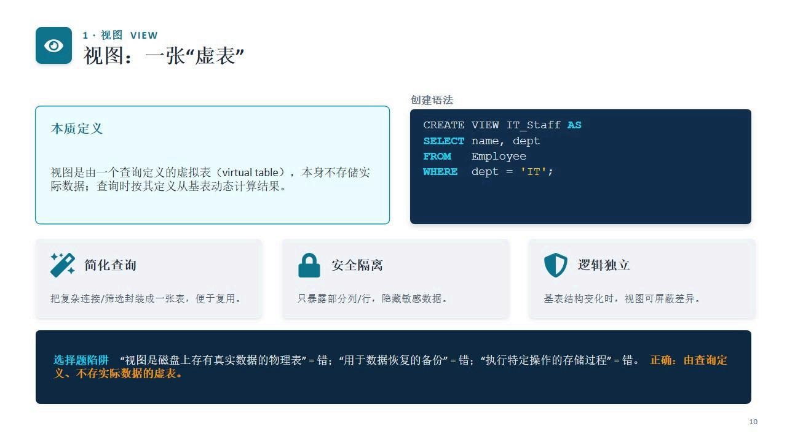
- 本质定义：视图是由一个查询定义的虚拟表，本身不存储实际数据；查询时按其定义从基表动态计算结果
- 简化查询：把复杂连接/筛选封装成一张表，便于复用
- 安全隔离：只暴露部分列/行，隐藏敏感数据
- 逻辑独立：基表结构变化时，视图可屏蔽差异
2关系代数
2.1 基本运算与扩展运算
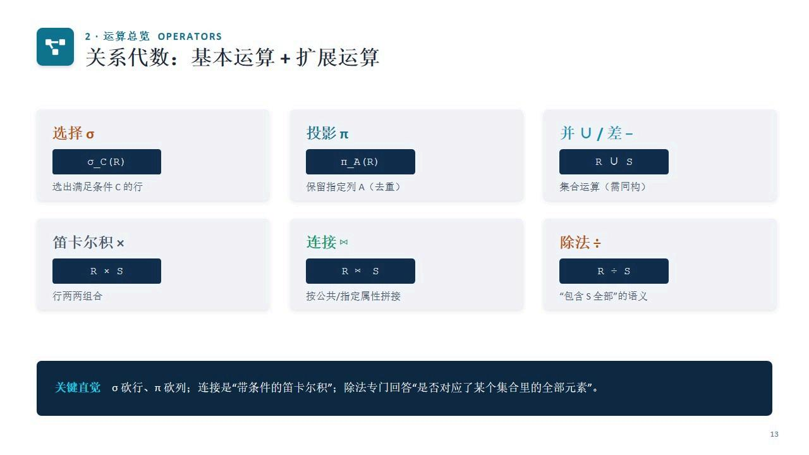
- 选择σ：选出满足条件C的行
- 投影π：保留指定列A（去重）
- 并∪/差-：集合运算（需同构）
- 笛卡尔积×：行两两组合
- 连接⋈：按公共/指定属性拼接
- 除法÷："包含S全部"的语义
关键直觉：σ砍行、π砍列；连接是"带条件的笛卡尔积"；除法专门回答"是否对应了某个集合里的全部元素"。
2.2 关系代数例题精讲
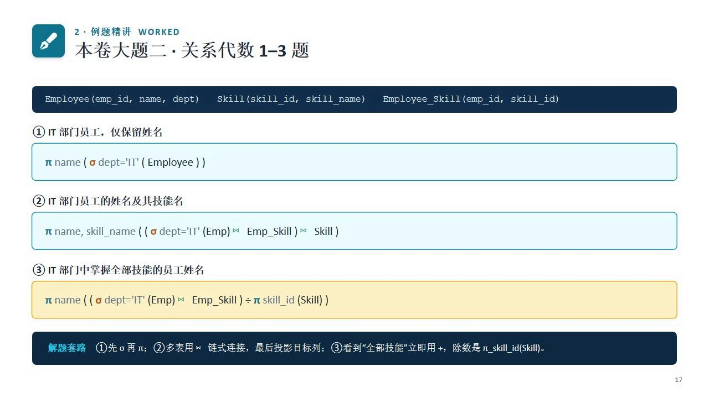
解题套路：①先σ再π；②多表用⋈链式连接，最后投影目标列；③看到"全部技能"立即用÷，除数是π skill_id(Skill)。
3SQL查询
3.1 单表查询：条件过滤·LIKE模式·排序
通配符：%匹配任意长度，_匹配单个字符。'A%'=A开头；'%A'=A结尾；'%A%'=含A。
3.2 多表连接：三表连接+多条件过滤
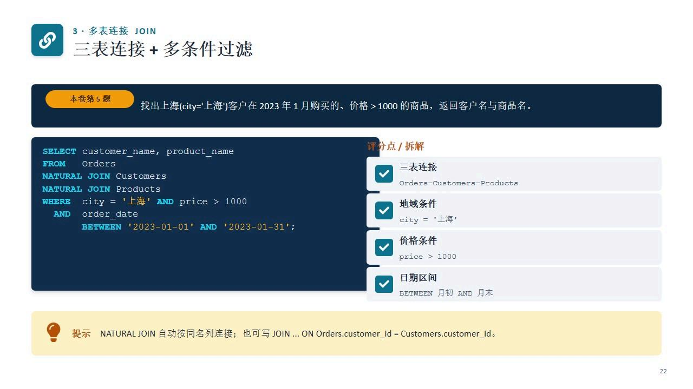
NATURAL JOIN自动按同名列连接；也可写JOIN ... ON Orders.customer_id = Customers.customer_id。
3.3 相关子查询：跨行比较
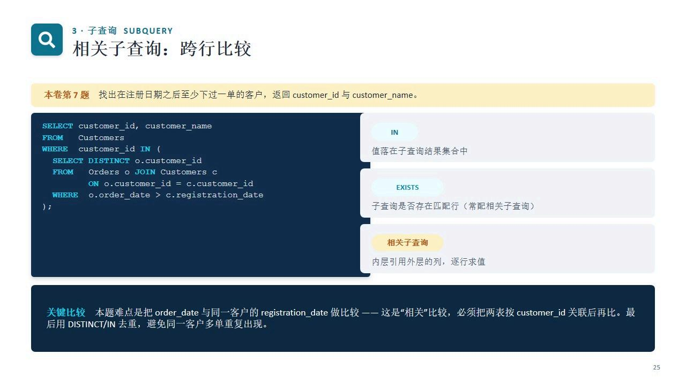
- IN：值落在子查询结果集合中
- EXISTS：子查询是否存在匹配行（常配相关子查询）
- 相关子查询：内层引用外层的列，逐行求值
4查询优化
4.1 同一查询，两种计划差多少？
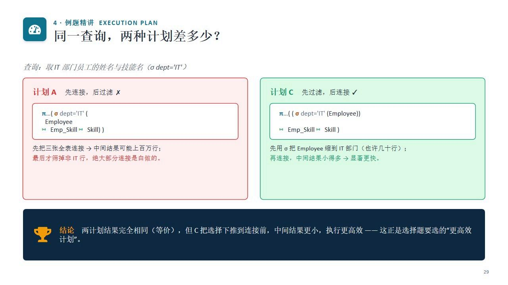
计划A（先连接后过滤）：先把三张全表连接→中间结果可能上百万行；最后才筛掉非IT行，绝大部分连接是白做的。
计划C（先过滤后连接）：先用σ把Employee缩到IT部门（也许几十行）；再连接，中间结果小得多→显著更快。
结论：两计划结果完全相同（等价），但C把选择下推到连接前，中间结果更小，执行更高效——这正是选择题要选的"更高效计划"。
4.2 易错清单
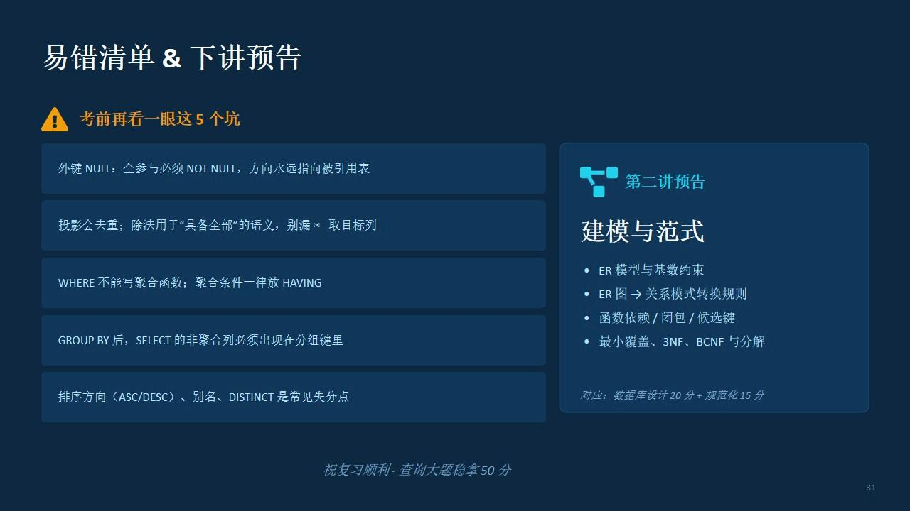
- 外键NULL：全参与必须NOT NULL，方向永远指向被引用表
- 投影会去重；除法用于"具备全部"的语义，别漏÷取目标列
- WHERE不能写聚合函数；聚合条件一律放HAVING
- GROUP BY后，SELECT的非聚合列必须出现在分组键里
- 排序方向（ASC/DESC）、别名、DISTINCT是常见失分点